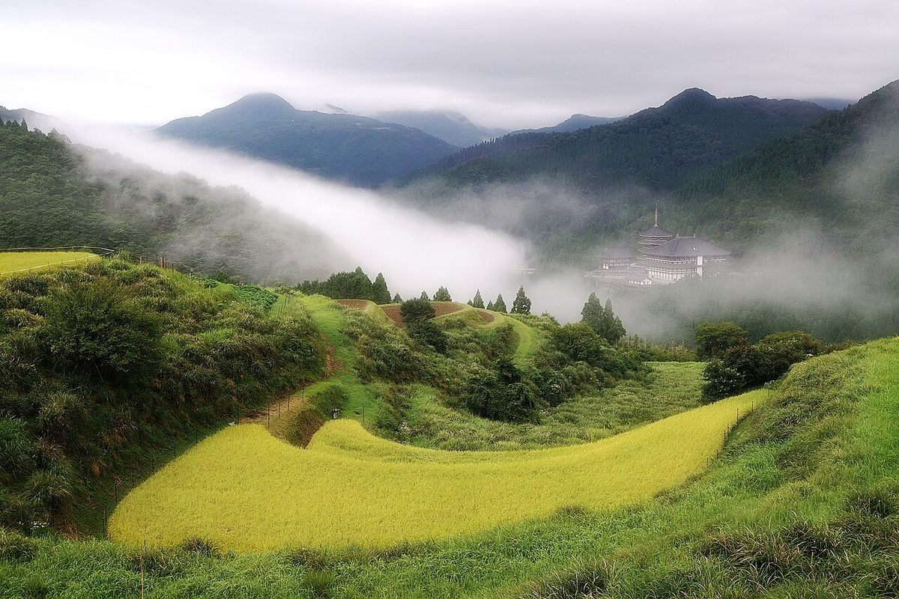
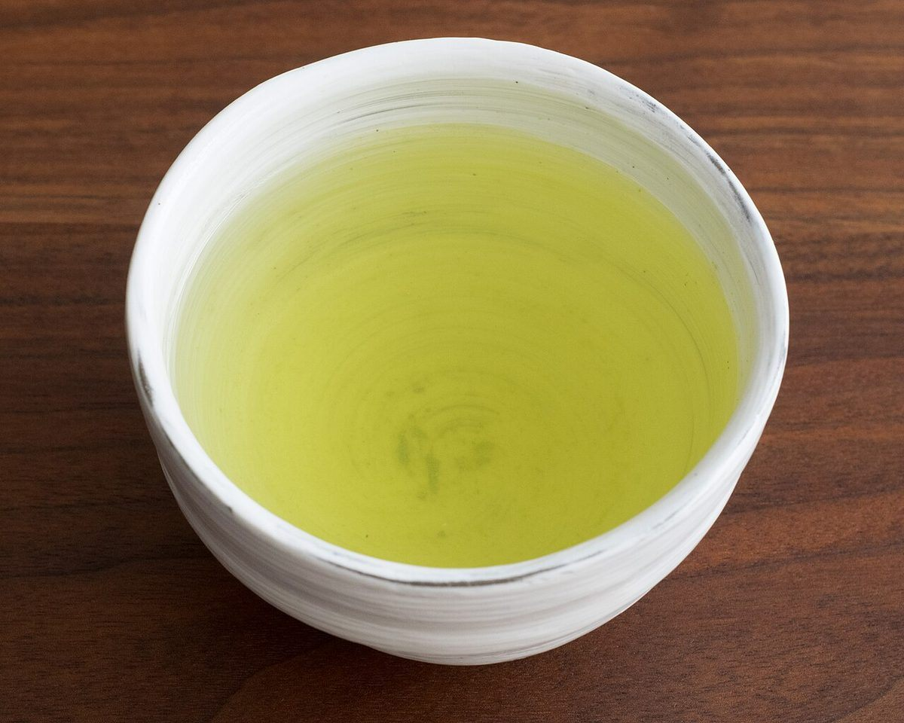
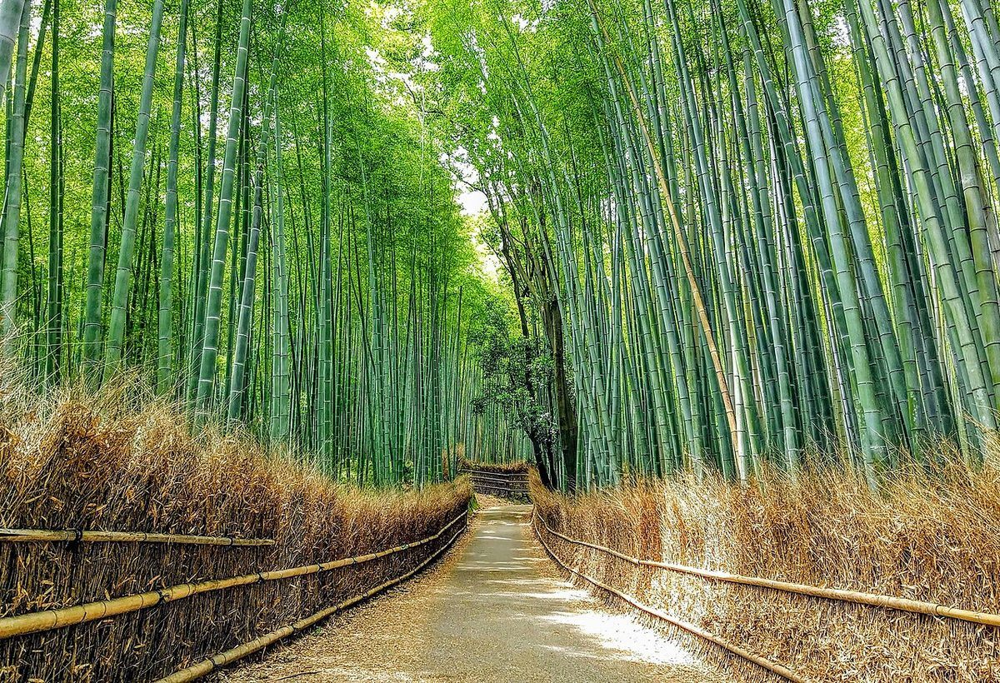
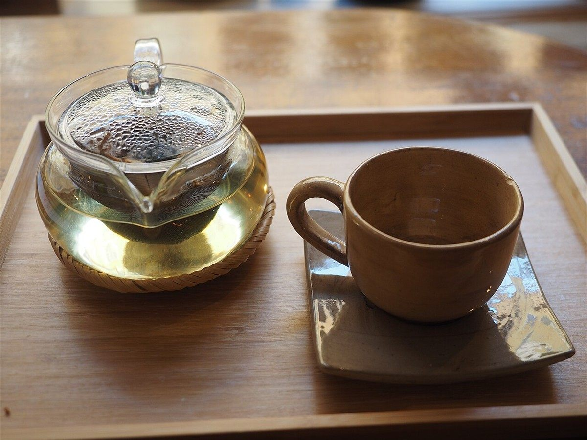

このコンセプトは制作側の案です。お店が掲げているものではありません。
現在わかっていること
確認できているのは住所・電話・Instagramの3点です。ほかは準備中です。
- 住所
- 鹿児島県出水市麓町13-29
- 電話
- 080-7896-1874
- chanoka_teaclub
- 営業時間
- 準備中(お問い合わせください)
- 定休日
- 準備中(お問い合わせください)

メニュー・料金・産地や製法などは準備中です。お電話かInstagramでご確認ください。
掲載写真はフリー素材のイメージで、店舗の実際の様子ではありません。他地域で撮影されたもの、撮影地が不明なものを含みます。


ほかのページも見る
- メニューを見る
メニューや料金について。現在は準備中です。 - 口コミのイメージ例を見る
実際の声ではない例です。 - お店についてを見る
確認できている情報の一覧です。 - アクセスを見る
住所と地図があります。